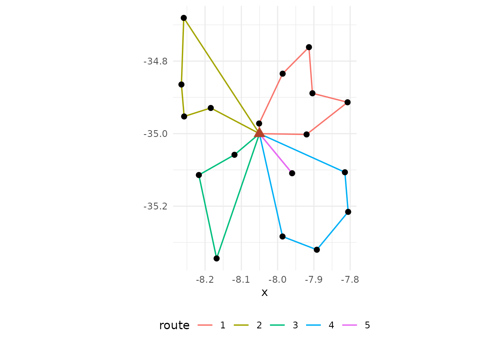

The same sample can be worked by one team on a long tour or by several teams on short routes. The total travel differs, the number of days differs and the cost differs. This vignette compares those organisations on one sample.
library(fieldopt)
set.seed(7)
frame <- data.frame(unit = c("depot", paste0("s", 1:60)),
lat = c(-8.05, -8.05 + runif(60, -0.25, 0.25)),
lon = c(-35.00, -35.00 + runif(60, -0.35, 0.35)))
m <- travel_matrix(frame)
model <- field_cost_model(per_travel = 1.8, per_unit = 40, per_interview = 12,
interviews_per_unit = 6, currency = "BRL")
s <- select_units(frame[-1, ], n = 18, seed = 3)
sel <- s$unit[s$sampled]One tour
one <- route_fieldwork(m, units = sel, depot = "depot", cost_model = model)
one
#>
#> ── Field routes ────────────────────────────────────────────────────────────────
#> 1 route from "depot" through 18 units: total travel 281.1 km (lower bound
#> 249.6, gap 12.6%).
#> Route 1 (281.1): s30 > s9 > s32 > s27 > s48 > s1 > s29 > s31 > s43 > s19 > s6 >
#> s13 > s54 > s47 > s4 > s16 > s12 > s37
#> Cost (BRL): travel 506 + units 720 + interviews 1296 = 2522.Routes limited by length
A team that must return to the depot every day has a maximum route length, here 100 km. The solver splits the tour optimally under that limit (Prins 2004) and improves each route locally.
days <- route_fieldwork(m, units = sel, depot = "depot", max_length = 100,
cost_model = model)
days
#>
#> ── Field routes ────────────────────────────────────────────────────────────────
#> 5 routes from "depot" through 18 units: total travel 403.1 km (lower bound
#> 249.6, gap 61.5%).
#> Route 1 (86.76): s37 > s54 > s13 > s6 > s19 > s43
#> Route 2 (97.48): s47 > s4 > s16 > s12
#> Route 3 (88.51): s30 > s9 > s32
#> Route 4 (99.02): s27 > s48 > s1 > s29
#> Route 5 (31.29): s31
#> Cost (BRL): travel 725.5 + units 720 + interviews 1296 = 2741.
autoplot(days)
Routes limited by stops
A team that can interview at most four units a day has a stop limit instead.
stops <- route_fieldwork(m, units = sel, depot = "depot", max_stops = 4,
cost_model = model)
stops
#>
#> ── Field routes ────────────────────────────────────────────────────────────────
#> 6 routes from "depot" through 18 units: total travel 406.2 km (lower bound
#> 249.6, gap 62.7%).
#> Route 1 (19.98): s30
#> Route 2 (97.48): s12 > s16 > s4 > s47
#> Route 3 (120.2): s9 > s32 > s27 > s48
#> Route 4 (79.38): s31 > s1 > s29 > s43
#> Route 5 (82.91): s6 > s19 > s13 > s54
#> Route 6 (6.175): s37
#> Cost (BRL): travel 731.1 + units 720 + interviews 1296 = 2747.Comparing
data.frame(organisation = c("one tour", "100 km per route", "4 stops per route"),
routes = c(one$n_routes, days$n_routes, stops$n_routes),
travel_km = round(c(one$total, days$total, stops$total), 1),
cost = round(c(one$cost[["total"]], days$cost[["total"]], stops$cost[["total"]])))
#> organisation routes travel_km cost
#> 1 one tour 1 281.1 2522
#> 2 100 km per route 5 403.1 2741
#> 3 4 stops per route 6 406.2 2747The travel grows with the number of routes because every route starts and ends at the depot; the question for the planner is whether the extra kilometres are cheaper than the extra days or teams, which is a cost model question, not a routing one.
A road-network matrix
Distances from coordinates understate travel on real roads. When a routing engine is available, pass its matrix: the units must be in the same order as the coordinates, which are then used only for names and plots.
# with the osrm package and a running server
net <- osrm::osrmTable(src = frame[, c("unit", "lon", "lat")],
dst = frame[, c("unit", "lon", "lat")])$durations
m_net <- travel_matrix(frame, matrix = net, unit = "min")
route_fieldwork(m_net, units = sel, depot = "depot", max_length = 480)Solver settings
iterations is the number of GRASP restarts;
alpha the greediness of the construction (0 is pure greedy,
1 pure random). The default 200 iterations with alpha = 0.3
is enough for a few hundred units; the gap field reports
how far the solution is from a two-edge lower bound, which is loose, so
gaps of 20 to 40 percent are normal for good solutions.
quick <- route_fieldwork(m, units = sel, depot = "depot", iterations = 10, seed = 2)
long <- route_fieldwork(m, units = sel, depot = "depot", iterations = 500, seed = 2)
c(quick = quick$total, long = long$total)
#> quick long
#> 281.1368 281.1368